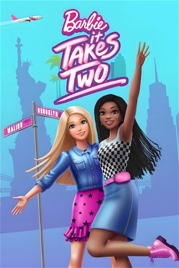

Barbie: It Takes Two (2022)
FamilyComedyChildrenAnimationAdventure
| Year | 2022 |
|---|---|
| Rating | 0 |
| Status | Completed |
| Seasons | 2 |
| Episodes | 26 |
| Genre | Family, Comedy, Children, Animation, Adventure |
Follows Barbie "Malibu" Roberts and Barbie "Brooklyn" Roberts as they attend a year of performing arts high school in NYC, set out to record a music demo, and take odd jobs to fund their dreams, all while exploring the Big Apple and traveling back to Malibu often to visit family and friends.
Episodes
Season 1
| # | Title | Air Date | Synopsis |
|---|---|---|---|
| 1 | It Takes Two | 2022-04-08 | Brooklyn and Malibu must convince their parents to let them stay together after the girls get accepted to the arts academy of their dreams. |
| 2 | First Day Frenzy | 2022-04-08 | Malibu's homesick and Brooklyn loses her voice, but the besties find a way to help each other and embrace their new lives in New York. |
| 3 | Barbies Rising | 2022-04-08 | A chance encounter with a media VIP at a pretzel cart moves Malibu and Brooklyn closer to pop stardom -- despite their other plans. |
| 4 | Gone to the Dogs | 2022-04-08 | Who let the dogs out and into the fashion show? The besties get busy as dog walkers to help save up for their first professional record demo. |
| 5 | Delivery Debacle | 2022-04-08 | Malibu and Brooklyn help deliver pastries for a cafe. But the job's not so sweet when the duo tries to help customers solve their personal problems. |
| 6 | Surprise, Surprise | 2022-04-08 | Malibu heads back home to throw her mom a surprise birthday bash -- but she'll have a wild time trying to keep it all a secret! |
| 7 | Start Small | 2022-04-08 | Brooklyn helps Malibu learn a valuable lesson after Malibu tries to bring her family's Cleanup Day tradition to her New York neighborhood. |
| 8 | We are Family | 2022-04-08 | Brooklyn helps Malibu remix trouble into good tunes when unexpected visitors tag along as the duo records their first song. |
| 9 | Turkey Trouble | 2022-04-08 | Turkey mishaps and family drama almost turn Thanksgiving upside down as Brooklyn and Malibu celebrate the holiday on separate coasts. |
| 10 | Two Stars Are Born | 2022-04-08 | Brooklyn and Malibu get a taste of stardom and soon discover life in the spotlight isn't all it's cracked up to be. |
| 11 | Triple Threat | 2022-04-08 | While saving up for their next recording session, Brooklyn and Malibu take on a babysitting gig with some troublemaking kids. |
| 12 | The Great Outdoors (1) | 2022-04-08 | During a camping trip with her family and friends, Malibu finds herself in trouble trying to keep everyone happy. While Brooklyn's quest to find the perfect place to write a song proves complicated. |
| 13 | The Great Outdoors (2) | 2022-04-08 | In this second part of the Roberts family and friends' camping adventure, Malibu and Brooklyn work with the group to solve two problems: The mystery of the screams in the woods, and writing their final song. |
Season 2
| # | Title | Air Date | Synopsis |
|---|---|---|---|
| 1 | We've Got Magic to Do | 2022-10-01 | A mishap onstage forces Malibu and Brooklyn to embark on a wild chase to rescue a prized pigeon, while Rafa and his young cousin Izzy set out on a mission to book the girls better gigs. |
| 2 | Cut It Out | 2022-10-01 | Malibu and Brooklyn agree to let The Dash make a movie about their singing duo for an upcoming film festival, but it's a total disaster and could ruin their career before it even starts. |
| 3 | Studio Sleuths | 2022-10-01 | When things at the recording studio suddenly start disappearing - including Brooklyn's phone, with Brooklyn and Malibu's latest music on it. The girls become amateur detectives to recover everything. |
| 4 | For the Record | 2022-10-01 | After accidentally breaking one of Kel's rare record albums, Malibu and Brooklyn turn to Jacks, Jayla and Lyla for backup as they take off on a comedic romp across the city to replace it! |
| 5 | Knock It Off | 2022-10-01 | When Malibu and Brooklyn decide to start their own business instead of doing odd jobs for other people, they suddenly find themselves in direct competition with The Dash, setting off an escalation of crazier and crazier |
| 6 | Costumed Capers | 2022-10-01 | Performing as costumed characters in Times Square, Brooklyn and Malibu find themselves caught in a case of mistaken identity when two pranksters wearing the same outfits cause trouble around the city. |
| 7 | Cupid Shuffle | 2022-10-01 | When Brooklyn and Malibu, members of Handler's Spring Dance planning committee, are struggling to boost ticket sales, a letter Malibu receives from Ken inspires a creative solution. |
| 8 | Team No Screens | 2022-10-01 | Epiphany challenges Malibu, Brooklyn, Daisy and Rafa to unplug from their electronic devices during a 24-hour camping trip outside the city, but a talent booker urgently calls the cafe with a huge concert offer. |
| 9 | Festival Fiasco | 2022-10-01 | The West Coast Roberts plan to enjoy a fun-filled weekend at a California music and food festival, where Malibu and Brooklyn are set to perform their biggest gig yet. |
| 10 | Buddy's is Booming | 2022-10-01 | Business is bad at Buddy's Cafe, so Malibu and Brooklyn call their pop star pal Emmie to help save the place with some social media buzz, but the results may be too good for the small cafe to handle. |
| 11 | To Dye For | 2022-10-01 | When Malibu and Brooklyn help Rafa dye some costumes, their skin accidently turns green from head to toe, right before a huge commercial audition. |
| 12 | Game On! | 2022-10-01 | Needing more cash to pay for the last song on their demo, Malibu and Brooklyn decide to compete on a wacky game show, but get more, and less, than they bargained for. |
| 13 | Race to the Finish | 2022-10-01 | Malibu and Brooklyn get help from their friends and family to find Otto Phoenix and deliver their music demo before heading to California for the summer, but encounter a series of unexpected obstacles. |